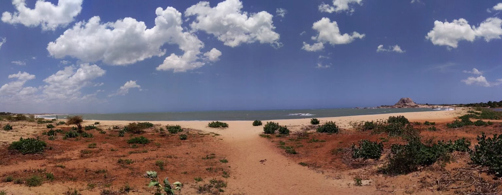
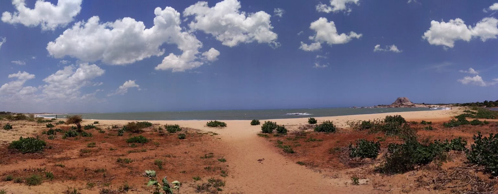

Yala National Park
Situated in Sri Lanka’s south-east hugging the panoramic Indian Ocean, Yala was designated a wildlife sanctuary in 1900 and was designated a national park in 1938. Ironically, the park was initially used as a unting ground for the elite under British rule. Yala is home to 44 varieties of mammal and 215 bird species. Among its more famous residents are the world’s biggest concentration of leopards, majestic elephants, sloth bears, sambars, jackals, spotted dear, peacocks, and crocodiles. The best time to visit Yala is between February and July when the water levels of the park are quite low, bringing animals into the open.
Read More
Important Facts
Tourism
The Yala National Park is the most visited park in Sri Lanka. In 2002 around 156,867 tourists visited the park. Foreigners, especially Europeans, account for 30% of total visitors. Block I is the main area for visits. From January to June in 2008, 9,078 local tourists and 7,532 foreigners have visited Yala. For the same period of time in 2009 the arrivals have risen to 18,031 locals and foreigners to 10,439.
Geographics of the Parks
Yala (යාල) National Park is the most visited and second largest national park in Sri Lanka, bordering the Indian Ocean. The park consists of five blocks, three of which are now open to the public. he park covers 979 square kilometres (378 sq mi) and is located about 300 kilometres (190 mi) from Colombo.
Cultural Importance
Yala had been a center of past civilisations. King Ravana, the mythical Hindu anti-hero is believed to have established his kingdom here with Ravana Kotte, now submerged in the sea, as its boundary. During the colonial period Yala became a popular hunting ground. Yala is annually visited by 400,000 pilgrims.
Gallery

 
